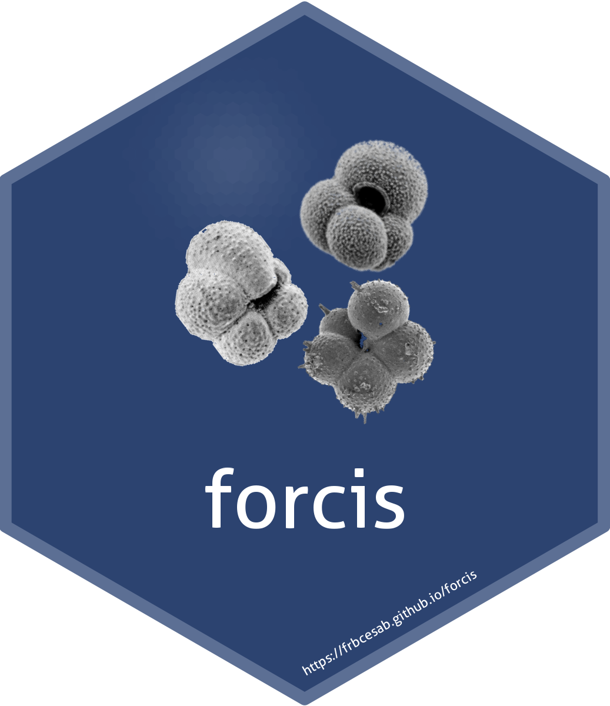

Print information of a specific version of a Zenodo repository
Source:R/zenodo.R
zen_get_version_info.RdPrint information of a specific version of a Zenodo repository
Arguments
- record_id
a
characterof length 1. The identifier of the repository in the Zenodo database.- version
a
characterof length 1. The label of the version. Usezen_list_versions()to list available versions. IfNULL(default) the latest version is used.
Value
A list with all information about the version, including: title,
doi, publication_date, description, access_right, creators,
keywords, version, resource_type, license, and files.
Examples
## Get information for the latest version of the FORCIS database ----
zen_get_version_info()
#> $title
#> [1] "The FORCIS database: A global census of planktonic Foraminifera from ocean waters"
#>
#> $doi
#> [1] "10.5281/zenodo.10376575"
#>
#> $publication_date
#> [1] "2023-12-14"
#>
#> $description
#> [1] "<p>The FORCIS (Foraminifera Response to Climatic Stress) database is a synthesis grouping datasets on living planktonic foraminifera. We assembled foraminiferal diversity and distribution data in the global oceans from 1910 until 2018, curating published and unpublished datasets. This database includes data collected using plankton tows, continuous plankton recorder, sediment traps and plankton pump from the global ocean.</p>\n\n<p>The FORCIS database version 01 is composed of 5 files (“.csv” format). All data coming from different sampling devices were put into separate “.csv” files. Only the data of the CPR from the Southern Hemisphere have been separated from the Northern Hemisphere CPR data as the data structure is not the same (species counts resolved vs. binned total counts, respectively). </p>\n\n<p>Apart from the file of CPR data from the Northern Hemisphere that contains only metadata and binned total counts, all the remaining four files contain 4 blocks:</p>\n\n<ul>\n\t<li>\n\t<p>Block 1: metadata (from column 1 to 71)</p>\n\t</li>\n\t<li>\n\t<p>Block 2: original counts (from column 72 to 274)</p>\n\t</li>\n\t<li>\n\t<p>Block 3: generated counts based on the validated taxonomy (from column 275 to 331). We added “_VT” to each species name to distinguish it from other taxonomy levels. E.g. “g_bulloides” became “g_bulloides_VT”. The number of species counted per subsample is also reported in the column “number_of_species_counted_VT”</p>\n\t</li>\n\t<li>\n\t<p>Block 4: generated counts based on the lumped taxonomy (from column 332 to 379). In this case, we added “_LT” to each species name. E.g. “n_dutertrei” became “n_dutertrei_VT”. We also calculated the number of species counted per subsample and reported it in the column “number_of_species_counted_LT”</p>\n\t</li>\n</ul>\n\n<p>Foraminifera abundance data counts are reported in different categories in the blocks 1,2 and 3 and described in the table below:</p>\n\n<table>\n\t<tbody>\n\t\t<tr>\n\t\t\t<td>\n\t\t\t<p><strong>count_type</strong></p>\n\t\t\t</td>\n\t\t\t<td>\n\t\t\t<p><strong>unit</strong></p>\n\t\t\t</td>\n\t\t</tr>\n\t\t<tr>\n\t\t\t<td>\n\t\t\t<p>Absolute</p>\n\t\t\t</td>\n\t\t\t<td>\n\t\t\t<p>ind/m3</p>\n\t\t\t</td>\n\t\t</tr>\n\t\t<tr>\n\t\t\t<td>\n\t\t\t<p>Relative</p>\n\t\t\t</td>\n\t\t\t<td>\n\t\t\t<p>%</p>\n\t\t\t</td>\n\t\t</tr>\n\t\t<tr>\n\t\t\t<td>\n\t\t\t<p>Raw</p>\n\t\t\t</td>\n\t\t\t<td>\n\t\t\t<p>number of individuals</p>\n\t\t\t</td>\n\t\t</tr>\n\t\t<tr>\n\t\t\t<td>\n\t\t\t<p>Fluxes</p>\n\t\t\t</td>\n\t\t\t<td>\n\t\t\t<p>ind/m2/day</p>\n\t\t\t</td>\n\t\t</tr>\n\t\t<tr>\n\t\t\t<td>\n\t\t\t<p>Bin_Absolute</p>\n\t\t\t</td>\n\t\t\t<td>\n\t\t\t<p>ind/m3</p>\n\t\t\t</td>\n\t\t</tr>\n\t\t<tr>\n\t\t\t<td>\n\t\t\t<p>Bin_Relative</p>\n\t\t\t</td>\n\t\t\t<td>\n\t\t\t<p>%</p>\n\t\t\t</td>\n\t\t</tr>\n\t\t<tr>\n\t\t\t<td>\n\t\t\t<p>Bin_Raw</p>\n\t\t\t</td>\n\t\t\t<td>\n\t\t\t<p>number of individuals</p>\n\t\t\t</td>\n\t\t</tr>\n\t\t<tr>\n\t\t\t<td>\n\t\t\t<p>Bin_Fluxes</p>\n\t\t\t</td>\n\t\t\t<td>\n\t\t\t<p>ind/m2/day</p>\n\t\t\t</td>\n\t\t</tr>\n\t</tbody>\n</table>\n\n<p> </p>\n\n<p>For more details about the FORCIS database column description, please check the data descriptor paper <strong>Chaabane et al. (2023) (https://doi.org/10.1038/s41597-023-02264-2).</strong></p>\n\n<p>The database is kept open for any new entries and the updated version will be released in csv format. The labels of updated versions of the released “.csv” files will contain the date of their publication and versioning number.</p>"
#>
#> $access_right
#> [1] "open"
#>
#> $creators
#> $creators[[1]]
#> name affiliation
#> 1 Chaabane, Sonia CEREGE, France and Max Planck, Germany
#> 2 de Garidel, Thibault CEREGE, France
#> 3 Giraud, Xavier CEREGE, France
#> 4 Schiebel, Ralf Max Planck, Germany
#> 5 Beaugrand, Gregory LOG, France
#> 6 Brummer, Geert-Jan NIOZ, Netherlands
#> 7 Casajus, Nicolas FRB CESAB
#> 8 Greco, Mattia Polish Academy of Sciences, Poland
#> 9 Grigoratou, Maria Mercator Ocean International, France
#> 10 Howa, Hélène LPG-BIAF, France
#> 11 Jonkers, Lukas MARUM, Germany
#> 12 Kucera, Michal MARUM, Germany
#> 13 Kuroyanagi, Azumi Tohoku Univ., Japan
#> 14 Meilland, Julie MARUM, Germany
#> 15 Monteiro, Fanny BRIDGE, UK
#> 16 Mortyn, Graham ICTA UAB, Spain
#> 17 Almogi-Labin Ahuva <NA>
#> 18 Asahi Hirofumi <NA>
#> 19 Avnaim-Katav Simona <NA>
#> 20 Bassinot Franck <NA>
#> 21 Davis Catherine V. <NA>
#> 22 Field David B. <NA>
#> 23 Hernandez-Almeida Ivan <NA>
#> 24 Herut Barak <NA>
#> 25 Hosie Graham <NA>
#> 26 Howard Will <NA>
#> 27 Jentzen Anna <NA>
#> 28 Johns David G. <NA>
#> 29 Keigwin Lloyd <NA>
#> 30 Kitchener John <NA>
#> 31 Kohfeld Karen E. <NA>
#> 32 Lessa Douglas V.O. <NA>
#> 33 Manno Clara <NA>
#> 34 Marchant Margarita <NA>
#> 35 Ofstad Siri <NA>
#> 36 Ortiz Joseph D. <NA>
#> 37 Post Alexandra <NA>
#> 38 Rigual-Hernandez Andres <NA>
#> 39 Rillo Marina C. <NA>
#> 40 Robinson Karen <NA>
#> 41 Sagawa Takuya <NA>
#> 42 Sierro Francisco <NA>
#> 43 Takahashi Kunio T. <NA>
#> 44 Torfstein Adi <NA>
#> 45 Venancio Igor <NA>
#> 46 Yamasaki Makoto <NA>
#> 47 Ziveri Patrizia <NA>
#> orcid
#> 1 0000-0002-4653-8610
#> 2 0000-0001-8983-9571
#> 3 0000-0002-6252-7647
#> 4 0000-0001-5067-8176
#> 5 <NA>
#> 6 <NA>
#> 7 <NA>
#> 8 <NA>
#> 9 <NA>
#> 10 <NA>
#> 11 <NA>
#> 12 <NA>
#> 13 <NA>
#> 14 <NA>
#> 15 <NA>
#> 16 <NA>
#> 17 <NA>
#> 18 <NA>
#> 19 <NA>
#> 20 <NA>
#> 21 <NA>
#> 22 <NA>
#> 23 <NA>
#> 24 <NA>
#> 25 <NA>
#> 26 <NA>
#> 27 <NA>
#> 28 <NA>
#> 29 <NA>
#> 30 <NA>
#> 31 <NA>
#> 32 <NA>
#> 33 <NA>
#> 34 <NA>
#> 35 <NA>
#> 36 <NA>
#> 37 <NA>
#> 38 <NA>
#> 39 <NA>
#> 40 <NA>
#> 41 <NA>
#> 42 <NA>
#> 43 <NA>
#> 44 <NA>
#> 45 <NA>
#> 46 <NA>
#> 47 <NA>
#>
#>
#> $keywords
#> $keywords[[1]]
#> [1] "Planktonic Foraminifera" "FORCIS database"
#> [3] "Biodiversity"
#>
#>
#> $version
#> [1] "07"
#>
#> $resource_type
#> [1] "dataset"
#>
#> $license
#> id
#> 5 cc-by-4.0
#>
#> $files
#> id key
#> 1 d9bcb4c0-9d1e-4891-8692-b9da80bbe013 FORCIS_cpr_south_v05_14092023.csv
#> 2 7366edfa-448c-46a1-ba91-5add69dca536 FORCIS_cpr_north_v05_14092023.csv
#> 3 8230819b-632d-48d3-9acd-39079ad6fd6b FORCIS_taxonomy_levels.xlsx
#> 4 e5c2d602-1bd0-46cd-80f2-bc1cc624d9c0 FORCIS_net_v05_14092023.csv
#> 5 4b5ac50b-3574-4749-89a0-b72d6152ed06 FORCIS_pump_v05_14092023.csv
#> 6 e1be5249-87a7-49a1-b73b-19ccc07a20c3 FORCIS_trap_v05_14092023.csv
#> 7 2b15c9cd-1a02-41e4-b66f-f76fbab9fbd1 iho_oceans_boundaries.rds
#> 8 7b996c49-726f-4218-9450-6e44d90f527b FORCIS_data_template.xlsx
#> size checksum
#> 1 75018303 md5:a8f8416c8aef723209e4a6df03722fdf
#> 2 67556549 md5:a32bbb863fe795cfcb953ca8928fd9c8
#> 3 24998 md5:e12a45e2d34def4c1642353597a04bf8
#> 4 27226894 md5:220855dc4346fdb02396f0769586a04f
#> 5 649676 md5:9bee5c30a35dacb623dc7ac4ff564117
#> 6 13270806 md5:76bac6d2c85f699da059bfd48334baf4
#> 7 9198965 md5:ff8d2f16650ef1f0cdcb4c3986112648
#> 8 357853 md5:ef3c3d67f1824c026fe6fb36aef0b56b
#> self
#> 1 https://zenodo.org/api/records/10376575/files/FORCIS_cpr_south_v05_14092023.csv/content
#> 2 https://zenodo.org/api/records/10376575/files/FORCIS_cpr_north_v05_14092023.csv/content
#> 3 https://zenodo.org/api/records/10376575/files/FORCIS_taxonomy_levels.xlsx/content
#> 4 https://zenodo.org/api/records/10376575/files/FORCIS_net_v05_14092023.csv/content
#> 5 https://zenodo.org/api/records/10376575/files/FORCIS_pump_v05_14092023.csv/content
#> 6 https://zenodo.org/api/records/10376575/files/FORCIS_trap_v05_14092023.csv/content
#> 7 https://zenodo.org/api/records/10376575/files/iho_oceans_boundaries.rds/content
#> 8 https://zenodo.org/api/records/10376575/files/FORCIS_data_template.xlsx/content
#>